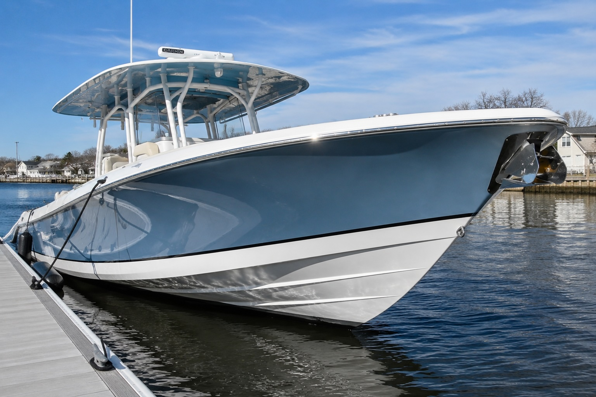
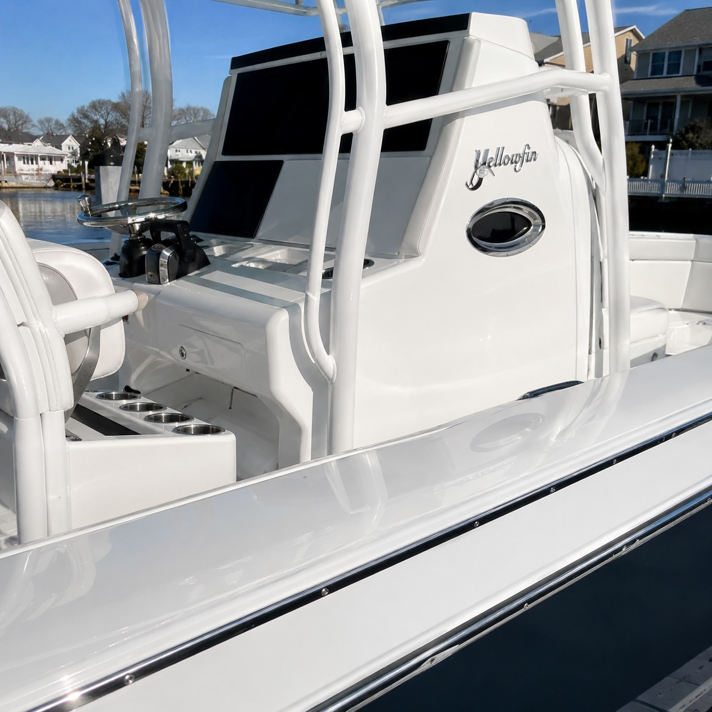
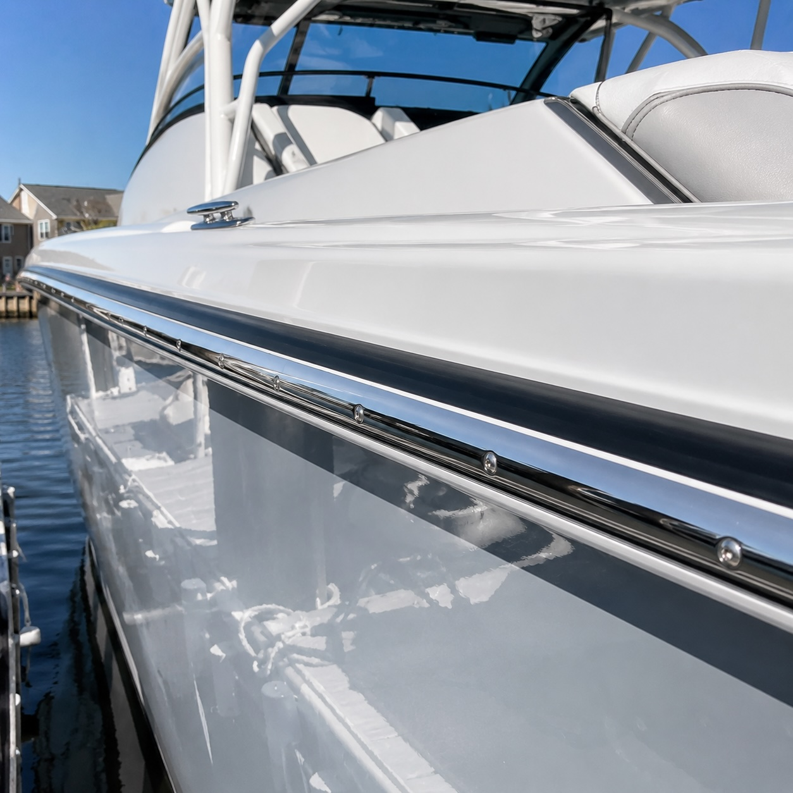
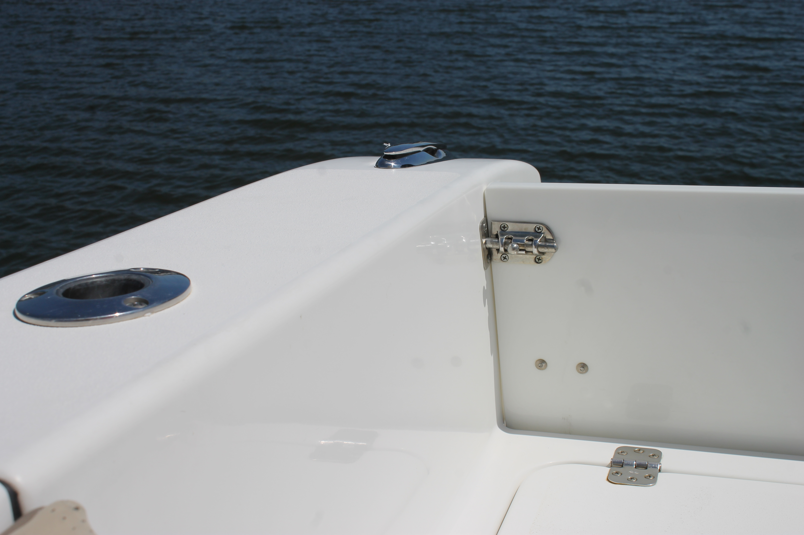

Long Island Boat Detailing
Premium boat cleaning, protection, polishing, and maintenance care for boat owners across Long Island.

Professional boat cleaning and detailing services built for routine upkeep, deeper protection, and gelcoat restoration.
Routine upkeep
Starting at $10/ft
Our premium maintenance service designed to keep your boat clean, protected, and ready for your next day on the water.
Perfect for routine upkeep and maintenance plans.
Added protection
Starting at $20/ft
Everything included in the Marina Maintenance Wash plus:
Adds protection while delivering a deeper shine.
Polish & correction
Starting at $20/ft
Every boat's gelcoat is different, so pricing is adjusted based on oxidation level and correction required.
Starting at $20/ft
Starting around $25-$30/ft
Starting around $35-$50+/ft
Final pricing determined after inspection.
Keep your boat consistently clean throughout the season while saving compared to one-time visits.
Best for frequent boaters
Starting at $7/ft per visit
For serious fishermen and boaters who are on the water every week.
Save 30% vs one-time visits
Most Popular
Best value
Starting at $8/ft per visit
The ideal balance of appearance and value.
Saves 20%
Easy upkeep
Starting at $9/ft per visit
For owners who want professional maintenance without frequent service.
Great for boats used less often or kept under cover.
A clean boat stands out. See the difference Hull & Shine LI brings to the marina.



Ready for a cleaner boat?
Send your boat length, marina/location, and the service you want. We’ll get back to you with pricing and availability.
Call, text, email, or message us on Instagram for pricing and availability.